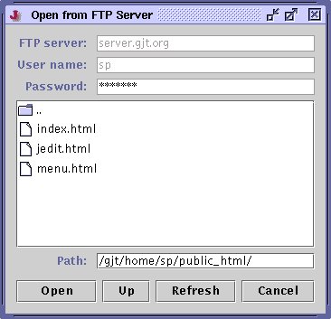

jEdit doesn't deal with disk files directly. Instead, it passes all buffer loading and saving through one of several available storage implementations known as virtual filesystems. The jEdit core includes local, FTP and URL filesystems. Plugins can be written to add more.
jEdit's features for manipulating local files have already been discussed in earlier chapters, so they will not be repeated here.
jEdit has its own FTP protocol implementation which is superior to the one that ships with Java. Unlike the default implementation, it supports non-anonymous logins and allows you to browse remote filesystems.
To open a file stored on an FTP server, invoke File>Open From>FTP Server. This will display the "FTP Browser" dialog box.
Figure 4-1. The FTP Browser dialog box

After entering some required information such as the FTP server, a user name and password, click Connect to log in to the server and display a directory listing. Double-click on a directory in the list to browse its contents; double-click on a file to open it. The Up button will go up to the directory containing the current one.
If a buffer was loaded from an FTP server, File>Save (keyboard equivalent: Control-S) will automatically upload it. To upload a buffer not originally from an FTP server, invoke File>Save To>FTP Server, which will display an FTP browser similar to the one used for opening files.
Some jEdit features do not work when editing remote files; no autosave or backup files are created, and the File>Current Directory menu cannot currently list remote directories.
Tip: If you know the exact path name of a buffer you want to open via FTP, you can forgo the FTP browser by entering an FTP URL (ftp://server/path) directly in the File>Open Path dialog box. You will then be prompted for a user name and password, and the file will be loaded.
Java's networking library provides bare-bones implementations of HTTP, Gopher and a few other protocols, so jEdit can also access remote files on non-FTP servers, albeit in a much more limited fashion. To open a URL, enter it in the File>Open Path dialog box. Currently, saving to non-FTP URLs is not supported (this is a limitation of Java's networking library).